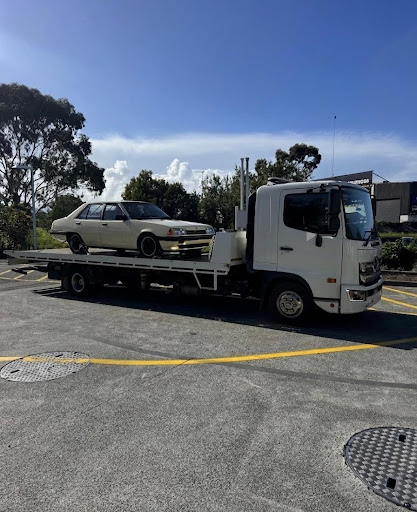

There's nothing quite like that sinking feeling — the engine sputters, the dashboard lights up like a Christmas tree, and suddenly you're crawling to a stop on a busy Brisbane motorway with trucks thundering past at 100km/h. It's stressful, it's dangerous, and if you've never been through it before, it can feel completely overwhelming.
But here's the truth: knowing what to do before it happens could save your life — and knowing who to call can get you off that motorway fast.
This guide walks you through exactly what to do when your car breaks down on a Brisbane highway or motorway, and how OG Towing — based in Capalaba and serving the entire Redland Bay area and beyond — can get you moving again quickly and safely.
Step 1: Stay Calm and Get Safe Immediately
The first few seconds after a breakdown are the most critical. Panic causes poor decisions, and poor decisions on a motorway can be fatal.
Here's what to do the moment you realise your car is struggling:
- Signal early — turn on your hazard lights immediately, even before you've fully stopped
- Steer to the left — move your vehicle as far left as possible, toward the emergency lane or shoulder
- Don't stop on the crest of a hill or a curve — other drivers won't see you in time
- Aim for an exit ramp if one is nearby — a side street or service road is always safer than the motorway shoulder
Once stopped, keep your hazard lights flashing. This is not optional — it is the single most important thing you can do to stay visible.
Stranded on a Brisbane Motorway Right Now? Don't wait. Call OG Towing immediately on [0430 917 742 ] for fast, reliable emergency towing in Capalaba, Redland Bay, and Greater Brisbane.
Step 2: Get Yourself and Your Passengers Out of the Vehicle
Once your car is stationary on the shoulder, your next job is to get everyone away from the vehicle — especially away from the traffic-side door.
Exit from the passenger side only, and move well behind the safety barrier or up the embankment if there is one. Do not stand behind your car or between your vehicle and traffic.
- Leave pets in the car if it's safe to do so — it's safer than having them run onto the motorway
- Take your phone, ID, and any essentials with you
- Never attempt roadside repairs while standing in or near a live lane of traffic
This applies whether you've broken down on the Gateway Motorway, the Pacific Motorway, the Bruce Highway heading north, or on any major road connecting Brisbane's bayside suburbs like Capalaba, Birkdale, or Cleveland.

Step 3: Make Your Vehicle as Visible as Possible
Visibility saves lives. Once you're safely away from the car, make it as easy as possible for other drivers to see your stationary vehicle — especially at night or in wet weather.
If you carry them, now is the time to use:
- Warning triangles — place them 50–100 metres behind your vehicle
- High-visibility vest — wear it if you need to be near the vehicle at all
- Torch or phone flashlight — useful at night if you need to be visible briefly
Many drivers travelling between Redland Bay, Victoria Point, or Mount Cotton and the Brisbane CBD use major arterial roads and motorways daily. Breakdowns in these high-traffic corridors need to be clearly signalled to prevent secondary collisions.
Read this blog - How 24/7 Towing Services Support the Emergency Response System
Step 4: Who Should You Call for Towing in Capalaba & Brisbane Bayside?
This is where many drivers make costly mistakes. They try to diagnose the problem, pop the bonnet, or attempt a DIY repair on the motorway shoulder.
Don't do it
A motorway shoulder is not a workshop. Even if you think it's just a flat tyre or an overheating engine, the risk of being struck by a passing vehicle is simply too high. The right move is to call a professional and wait safely away from the vehicle.
Who Should You Call?
Your first call should be to a trusted local towing and roadside assistance provider. If you're in the Brisbane bayside area — think Capalaba, Alexandra Hills, Thorneside, Lota, or anywhere across the Redland City region — that means calling OG Towing.
OG Towing operates out of Capalaba and provides fast emergency towing and roadside assistance across the broader Brisbane area. Whether you've broken down near the Capalaba Park Shopping Centre or you're stranded somewhere out past Wellington Point or Redland Bay, the team can reach you quickly and get you to safety.
You should also consider calling
- *13 ROAD (13 76 23)* — Queensland's road hazard and emergency reporting line
- *Your insurance provider* — many policies include roadside assistance, and OG Towing is experienced with insurance tows
- *000* — only if there is an immediate risk to life.
Step 5: Know Your Towing Options
Not all breakdowns are the same, and not all towing jobs are either. OG Towing offers a full range of services to cover whatever situation you find yourself in:
Emergency Towing
If your vehicle is undriveable and you're stranded on or near a Brisbane motorway, emergency towing gets you off the road fast. OG Towing's team is available to respond across Capalaba, Birkdale, Cleveland, and the surrounding suburbs.
Accident Towing
Been involved in a collision? Accident towing requires care and the right equipment to avoid causing further damage to your vehicle. OG Towing handles post-accident recoveries across the Redland Bay corridor and into greater Brisbane.
Insurance Tow
If you have roadside assistance through your insurer, you may be entitled to a covered tow. OG Towing works with insurance providers regularly, making the claims process as smooth as possible so you're not left stressing on the side of the road.
Lower Car Towing
Driving a sports car, modified vehicle, or low-profile car? Standard tow trucks can cause damage to low-clearance vehicles. OG Towing has the right gear for low car towing — a detail that matters a lot if you're driving something you care about.
Machinery Towing
For tradespeople or business owners — if you have equipment or machinery that needs moving across the Brisbane region, OG Towing handles that too.
What NOT to Do During a Motorway Breakdown
Just as important as knowing the right steps is avoiding the wrong ones. Here are the most common mistakes Brisbane drivers make during a motorway breakdown:
- Don't stand next to your car — even a momentary lapse by another driver can be catastrophic
- Don't accept a tow from an unlicensed or unverified stranger* — always call a trusted provider
- Don't leave your hazards off — even in daylight, they're essential
- Don't re-enter the motorway on foot — even to retrieve something from the road
- Don't assume your car is blocking traffic and panic-move it — a poorly controlled move into live traffic is more dangerous than staying put
Brisbane Motorway Breakdown Hotspots to Be Aware Of
If you regularly travel between the Redland Bay suburbs and Brisbane's inner city, there are a few key stretches where breakdowns tend to occur more frequently:
- Gateway Motorway (M1) — particularly around the Capalaba, Eight Mile Plains, and Springwood interchanges
- Pacific Motorway (M3) — heavy traffic volumes heading south from Brisbane
- Cleveland–Redland Bay Road — a major route for residents of Victoria Point, Mount Cotton, and Redland Bay heading into Capalaba and beyond
- Old Cleveland Road — connecting Capalaba, Birkdale, and Thorneside to the eastern suburbs and the CBD
If you're broken down anywhere along these routes, tow truck Capalaba base means you're never far from a fast, professional response.
Why Local Towing Matters More Than You Think
When your car breaks down on a busy Brisbane road, the last thing you want is to wait an hour for a towing company based on the other side of the city.
OG Towing is local. Based in Capalaba, the team knows the Redland Bay area, the bayside suburbs, and the Brisbane road network like the back of their hand. They know the fastest routes, the best drop-off points, and how to work efficiently with Queensland traffic management requirements.
Serving Alexandra Hills, Birkdale, Cleveland, Wellington Point, Mount Cotton, Victoria Point, Lota, Redland Bay, and Thorneside — as well as broader Brisbane — OG Towing is the towing company the local community trusts because they're genuinely part of it.
And it's not just towing. OG Towing also offers a [Cash For car in Capalaba] service — so if your breakdown is the final nail in the coffin for an older vehicle, you may be able to turn a frustrating situation into cash in your pocket.
Be Prepared Before You Need It
The best time to find a reliable tow truck company is before you ever need one. Save OG Towing's number in your phone today. That way, if you ever find yourself broken down on the Gateway Motorway, stranded past Wellington Point, or stuck along Redland Bay Road, you know exactly who to call — and you won't be frantically Googling from the side of the road.
Broken Down Near Capalaba or Anywhere in Brisbane? Call OG Towing Now.
Don't wait and don't risk your safety. Whether it's an emergency tow, accident recovery, insurance tow, or you need a reliable local car towing service anywhere across the Redland Bay region and greater Brisbane, OG Towing has you covered.
Visit [OG Towing]() or call now... for fast, professional towing from a team that knows Brisbane's roads.
Available across Capalaba, Alexandra Hills, Birkdale, Cleveland, Wellington Point, Mount Cotton, Victoria Point, Lota, Redland Bay, Thorneside, and Brisbane.
If your car breaks down on a Brisbane motorway, turn on your hazard lights
immediately and carefully move your vehicle as far left as possible onto the
shoulder or emergency lane. Exit the vehicle safely from the passenger side and
move behind a safety barrier if available. Avoid attempting repairs on the
roadside and call a professional towing service for assistance.
Emergency towing costs in Brisbane can vary depending on the distance, vehicle
type, time of day, and the condition of the vehicle. Short local tows are
generally more affordable, while accident recoveries or long-distance towing may
cost more. Contacting a local towing company like OG Towing can help you get a
fast and accurate quote.
Many comprehensive car insurance policies in Australia include towing and
roadside assistance coverage. Depending on your insurer and level of cover, your
towing costs may be partially or fully covered after a breakdown or accident.
It's always best to check your policy details or contact your insurer directly.
Yes, lowered vehicles and sports cars can be towed safely when the correct
equipment is used. Professional towing companies use flatbed tow trucks and
specialised loading techniques designed for low-clearance vehicles to help
prevent damage to bumpers, spoilers, and undercarriages during transport.
Tow truck arrival times depend on your location, traffic conditions, and demand
at the time of your call. In busy Brisbane areas such as Capalaba, Cleveland,
Redland Bay, and surrounding suburbs, local towing providers can often respond
much faster than companies based further away.